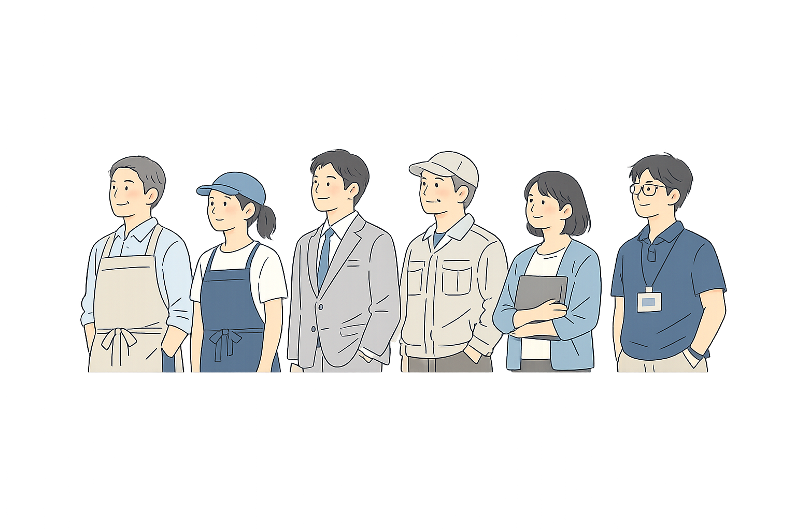

サービス
最初から大きく進めようとすると、ほとんどの場合うまくいきません。
まず課題と進め方を整理して、小さく試して、手応えが出たら本格導入へ。
サービスはその流れに沿ったフェーズ別の支援です。
全部使う必要はありません。今の状況に必要なところから始めればいい。

サービス
状況や課題に合わせて、最適な関わり方を選べます。
「どれがいいかわからない」場合は、まず相談から。
意思決定支援
課題の背景や本当の目的を整理し、改善ロードマップを作ります。1〜3ヶ月で、納得して次の一手を決められる状態を目指します。
課題解決支援
課題解決を目指しながら、状況に応じて役割を変え、ゴール達成まで伴走します。計画通りに進めることではなく、成果につながる状態を作ることを重視します。
開発プロジェクト支援
開発プロジェクトを成功させるために、経営・現場・開発会社をつなぎながら、導入後の成果まで見据えて支援します。
リソース投資について
この会社の挑戦を、
一緒に前へ進めたい。
関わっている中で、「これは深いところで支えたい」と思える会社に出会うことがあります。
現場と向き合い、小さくても本気で挑んでいる。うまくいったら、日本が少し良くなるかもしれない。そう感じられる会社です。
そういう会社と関わるとき、時間・知見・改善力を通常とは別の形で先行投資することがあります。まず小さく始め、一緒に確かめながら進める。「応援したい」という気持ちが出発点で、成果につながったとき、その価値に見合った形で対価をいただくことを前提に。
支援する・される、ではなく、
一緒に未来を作るパートナーとして関わる。そういう考え方です。
もし興味があれば、相談の中でお話しできればと思っています。